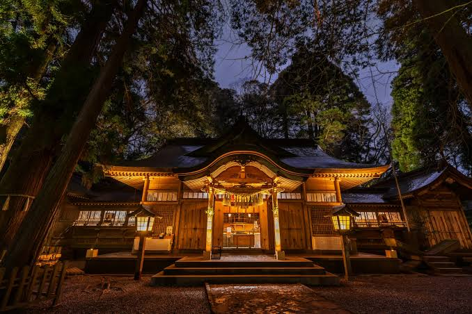
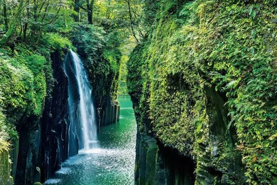
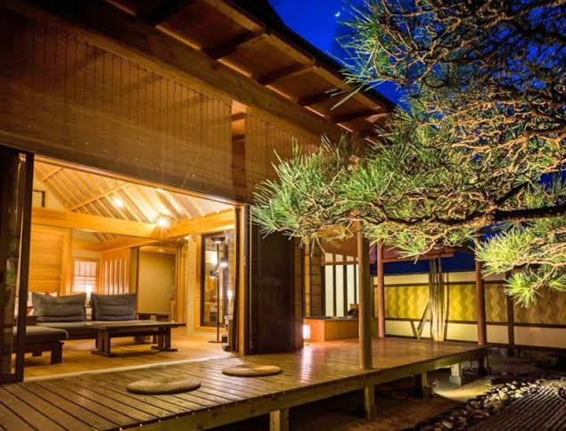
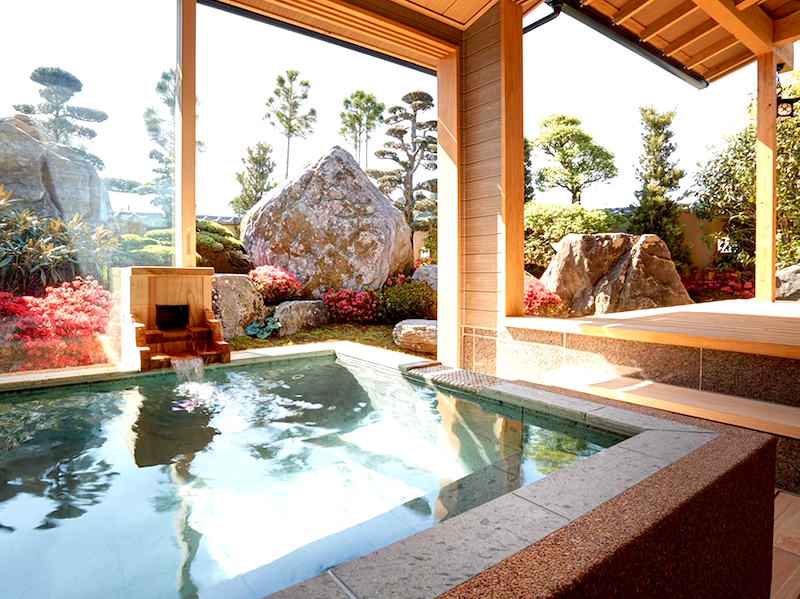
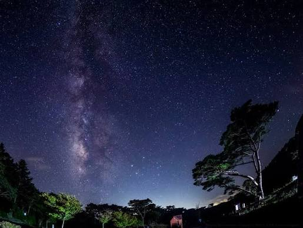
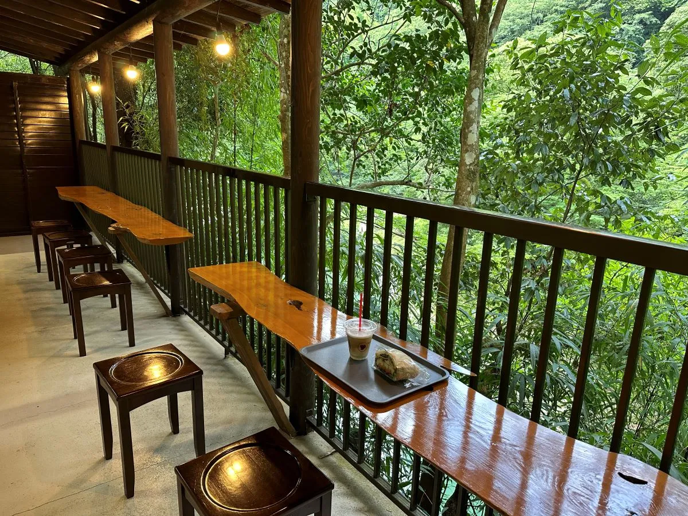
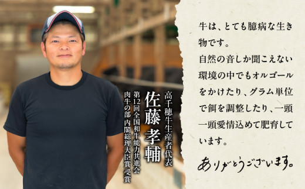

Our Story
渓谷に霧が満ち、
神々が今も歩いているような町。
高千穂は、天孫降臨の神話が今も暮らしの中に息づく場所です。切り立った渓谷、湧き続ける水、夜ごと奉納される神楽——ここでは自然と信仰が分かれることなく、ひとつの時間として流れています。
私たちが紹介したいのは、観光スポットの一覧ではありません。朝霧の匂い、渓谷を渡るボートの静けさ、夜神楽の炎、星空の下で聞く笛の音——高千穂だけが持つ「時間の質感」です。


Our Story
高千穂は、天孫降臨の神話が今も暮らしの中に息づく場所です。切り立った渓谷、湧き続ける水、夜ごと奉納される神楽——ここでは自然と信仰が分かれることなく、ひとつの時間として流れています。
私たちが紹介したいのは、観光スポットの一覧ではありません。朝霧の匂い、渓谷を渡るボートの静けさ、夜神楽の炎、星空の下で聞く笛の音——高千穂だけが持つ「時間の質感」です。
Time Journey
05:40
霧が谷を満たし、光がゆっくりと差し込む時間。空気は澄み、鳥の声だけが響いています。
Model Course
Day Trip · 01
05:40 雲海展望所 → 08:00 高千穂神社 → 10:00 高千穂峡ボート → 12:30 高千穂牛ランチ → 15:00 天岩戸神社
Day Trip · 02
09:00 くしふる神社 → 10:30 高千穂神社 → 12:00 郷土料理店 → 14:00 天安河原 → 16:00 夕景カフェ
Stay

渓谷を望む、静寂の夜

温泉と、語らう夜

星空と、静けさの夜
Gourmet
Signature
Local

Café
Experience
01
切り立つ柱状節理の渓谷を、水面から見上げる静かな時間。
02
三十三番の神楽を、地区の人々とともに夜通し奉納する伝統。
03
山あいに湧く湯で、一日の歩みをゆっくりとほどく。
04
天孫降臨の神話をたどる、鎮守の杜の静けさ。
Journal
神話

食
自然
文化
Access